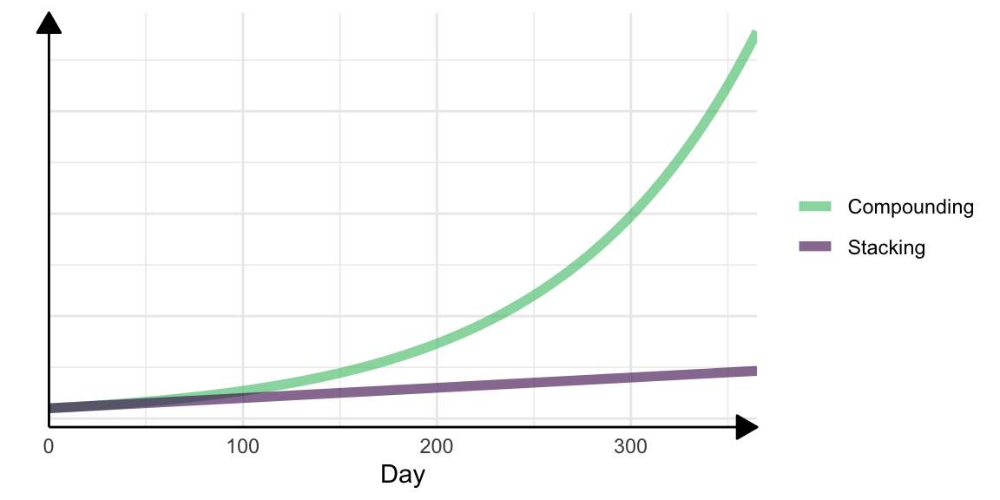

![]()

About Atomic Habits
In his best-selling book Atomic Habits*, the author James Clear argues that the key to making meaningful progress in our lives is not about making grand, sweeping changes, but rather about building small, incremental habits that compound over time. With his scientific approach to habit formation and practical, actionable advice, James Clear shows readers how to break bad habits and form good ones to achieve their goals and improve their lives. Whether you’re looking to improve your health, increase your wealth, or achieve personal growth, Atomic Habits* offers a simple yet powerful framework for making positive changes that stick.
It has gained international attention: At the time of writing this blog post, over 8 million copies have been sold. The title “Atomic Habits” immediately drew my attention. It communicates the idea that small, incremental changes can have a significant impact on our lives. Much like atoms, which are the basic building blocks of matter.1 These small habits, or “atomic habits”, can either work for or against us, depending on whether they are positive or negative. By focusing on building positive atomic habits, we can make significant progress towards our goals and create a better life for ourselves. “Atomic” captures the very essence of behavior change from a psychological perspective:
1 dear physicist reading this: ‘basic building blocks’ is meant figuratively. Please resist the urge to correct this ;)
- Atoms are tiny. Behavior change needs to happen in tiny bits to be sustainable.
- Atoms are crucial building blocks of the world around us. Likewise, habits are crucial building blocks of human behavior.
Both aspects surface throughout the book in different forms, in different contexts, and with different implications. Yet, if I were to explain the very core idea of the book to someone in under 30 seconds, I would build on peoples’ pre-existing intuition of what makes something atomic.
In this blog post, I am in a lucky position to have more than 30 seconds. That’s why I want to share my personal four realizations from the book Atomic Habits.
Realization 1: Four Laws of Behavior Change
James Clear builds his method on an adapted version of classical behavioral Psychology:
Cue → Craving → Action → Reward
Each step is a cogwheel to increase the chance to perform a good habit. The framework for working with these cogwheels are the Four Laws of Behavior Change. Each law can be inverted to decrease the odds of a bad habit, but more on that later.
| Stage | Law: Good Habits | Inverted Law: Bad Habits |
|---|---|---|
| 1: Cue | Make it visible | Make it invisible |
| 2: Craving | Make it attractive | Make it unattractive |
| 3: Action | Make it easy | Make it difficult |
| 4: Reward | Make it satisfying | Make it unsatisfying |
These laws form the core framework of the book. Each law can be used to facilitate good habits and make you stop bad habits. It’s straightforward to think of examples for each law:
Law 1: Make it visible
I want to read more. That’s why I try to keep a book right at my bedside table. When I go to bed at night and see a book there, I always pick it up and read a bit.
Implementing the habit of reading each night literally made me buy the book Atomic Habits*. Some time ago, I attended a software engineering workshop and spent a night at an AirBnB. On my way to the workshop, I realized that I forgot the book I was currently reading at home. I went to an English book store and Atomic Habits* was the first book that I grabbed – what a fortunate coincidence!
Law 2: Make it attractive
Let’s say you want to start exercising regularly, but you struggle to find the motivation to do so. One way to make exercise more attractive is to find a form of physical activity that you genuinely enjoy, such as dancing, swimming, or playing a sport. By choosing an activity that you find enjoyable, you are more likely to look forward to your workouts and be motivated to do them consistently. You could also try finding a workout buddy or joining a class to make the experience more social and enjoyable. By making exercise more attractive, you are more likely to stick with it and make it a regular part of your routine.
Deep Dive: The attractiveness of some behavior refers to how tempting the behavior is when looking forward to it. That’s not the same as satisfying behavior. Consider the example of regular exercise: The problem is that most people (me included) just don’t exercise in the first place because it is unattractive in anticipation. However, once I get in my running shoes and start exercising, I enjoy it. It is unattractive in anticipation but satisfying in action.
Law 3: Make it easy
A linter is a tool that checks your code for syntax errors and style issues, such as indentation errors, unnecessary white space, or naming conventions. By using a linter, you can catch and fix these issues before you run your code, which can save you time and frustration. This can be particularly helpful when working on a team, as it can help to ensure that your code is consistent with the project’s style guidelines.
In this way, using a linter can be seen as a way of applying the third law of behavior change (make it easy) to your Python coding. By automating the process of checking your code for errors and style issues, a linter makes it easier for you to write clean and organized Python code. This can save you time and effort and help you avoid common coding mistakes. By making it easy to write clean Python code, you are more likely to build the habit of producing high-quality code that is easy to read and maintain.
Law 4: Make it satisfying
I want to reduce avoidable expenses. However, not buying that croissant at the bakery does not bring any joy by itself: I am not a frugalist who finds the actual act of not spending money attractive. To make not spending money satisfying, I transfer the money that I did not spend on that croissant to a savings account. The money in this savings account is dedicated to non-essential stuff which I really want to purchase (but won’t buy right away because I’m trying to be financially responsible).
It turns out that the money from unbought stuff adds up. For instance, I recently purchased an awesome outdoor pizza oven from the accumulated money in this savings account. In hindsight, that pizza oven is way more satisfying than all the croissants, coffees, and chocolate bars that I did not buy. And that makes not buying that croissant incredibly satisfying for me – because I replace this action with the action “transfer the croissant money to the savings account”.
Deep Dive: “Transfer the croissant money to the savings account” is again a habit that is governed by the Four Laws. For instance, Law 2 (make it easy): If wiring money requires going to the bank and filling out a transaction form (difficult), I would probably stop doing it after a couple of times. Instead, I simply use my mobile phone for the transaction and it takes less than a minute (easy).
Realization 2: Real-life situations are inverse
Interesting real-life scenarios are a little more complicated – they are often inverse to the actual theory. Let me explain what I mean by this cryptic sentence. What we did so far is take a Law (e.g., make it visible) and think about examples of where we might apply that strategy. Real-life usually works the opposite way: We begin the thought process with a good habit we want to implement (or a bad habit we want to stop). Then, we need to figure out a strategy to achieve this intention: Should we first try to make this bad habit invisible, unattractive, difficult, or unsatisfying? We definitely should not try to do all of the above at once, because this might be too big of a change and we probably get back to normal after a week. So we need a method to identify potential angles to tackle our intention. James Clear proposes to first analyze the habit of interest and identify its cue, craving, action, and reward. Let’s apply this framework to a habit of mine that I want to stop:
Checking my emails disrupts my flow state when I am programming. That’s why I deliberately don’t use a proper e-mail program (like Outlook) on my work laptop. Instead, I need to manually log in to each of my mail accounts to check my emails. That’s just enough of a barrier for me to not check my emails every other minute.
Realization 3: Habits do not stack, habits compound
James Clear makes a fair point when he claims that habits are the compound interest of behavior change.
Wait, like compound interest? What is this, a pyramid scheme?
Habits can be thought of as the compound interest of behavior change because, like compound interest, they have a cumulative effect that grows over time. When you develop a new habit, it may seem small and insignificant at first. However, as you continue to practice that habit day after day, it gradually becomes stronger and more ingrained in your routine. When we perform a behavior consistently, it becomes a habit, which means we can do it automatically without having to think about it. This frees up our mental energy and allows us to focus on other things. The impact of habits is often not immediately noticeable, but over time they can have a significant effect on our lives.
Let’s say you want to improve your physical fitness and develop the habit of exercising regularly. At first, you may struggle to find the motivation to exercise and may not see significant progress in your fitness level. However, as you continue to exercise consistently, you will begin to see small improvements in your strength and endurance.
As you continue to exercise consistently over time, those small improvements will compound and you will see more significant progress in your fitness level. You may find that you can run longer distances, lift heavier weights, or perform other physical activities with greater ease. These improvements will encourage you to continue exercising regularly, and the habit will become stronger and more ingrained in your routine.
In this way, the habit of exercising regularly can be seen as the compound interest of behavior change. By starting small and building upon that habit over time, you can make significant progress in your physical fitness and improve your overall health and well-being.
Realization 4: Many habits fly under the radar
Habits are deeply routed and fully automatic. More often than not, we are completely unaware of our habits. For instance, I was on vacation recently. During my vacation, I wanted to resist the urge to read any work-related emails or messages on my phone.
To make the habit of reading work-related messages invisible (1st Law), I just deleted Slack from my phone. That one was easy. In contrast, deleting the email app from my phone wasn’t as easy because (i) I needed access to private emails; and (ii) re-configuring my entire email app after the vacation would take way too long. That’s why I simply moved the email app from my phone’s fast access bar into some junkyard folder that’s crammed with unused apps.
I was surprised by what happened during my vacation: Whenever I unlocked my phone, my thumb would automatically gravitate to the fast access bar where the email app used to be! Moving the app to another location made me realize how deeply automated the habit of opening the email app upon unlocking my phone had become over the past years. The brief moment of irritation when my brain realized that the app is no longer at its usual place was enough to achieve a crucial step to change bad habits: It made the bad habit visible – I was finally aware of it!
Psychologists would say that the behavior has become salient.
Returning from my vacation, my email app did not make it back to the fast access bar. Whenever I want to check my emails on my mobile phone, I now need to navigate into that dusty jukyard folder This makes the habit of checking emails on my phone just a little more invisible and just a little more difficult. I appreciate that.
Conclusion
Reading Atomic Habits* started as a work trip accident because I forgot my other book at home. I must admit that it was a fortunate accident There are two more closing remarks I want to make.
First, the book matched well with my own previous experience on behavior change. I could see many parallels to what has worked well for me in the past, and found those things that went poorly for me in the past in the book’s counter-examples. At the same time, the book gave me a proper vocabulary for all my implicit knowledge and experience on behavior change. Now, I have the right words to express what I have been experiencing all along. This makes the topic of behavior change much more actionable, and that’s basis for achieving sustainable change.
Second, Atomic Habits* is a rather light read, but it does contain a lot of information, and many claims are backed by scientific references. I would often find myself thinking “well, that claim is far-fetched”, just to see that James Clear did actually provide an academic paper to support that claim in the appendix. As a scientist, I appreciate this a lot, and I know that this is not common practice in this genre of books.
In conclusion, Atomic Habits* by James Clear offers a simple yet powerful framework for making positive changes that stick. By focusing on building small, incremental habits that compound over time, we can make meaningful progress toward our goals and improve our lives. Clear’s scientific approach to habit formation and practical, actionable advice make it an invaluable resource for anyone looking to break bad habits and form good ones.
To take action based on the ideas in this book, consider the following steps:
- Identify a specific goal or habit that you want to work on.
- Make a plan for how you will build this habit, using the four laws of behavior change: make it obvious, make it attractive, make it easy, and make it satisfying.
- Track your progress and celebrate your successes along the way.
- Seek out resources and support to help you stay motivated and on track.
By following these steps, you can begin to build the atomic habits that will help you achieve your goals and create a better life for yourself.
I can highly recommend reading Atomic Habits* to find out more about the patterns in your habits. You might just get some inspiration about how to stop this one habit that you have been trying to get rid of for years.
Affiliate link disclaimer: This post may contain affiliate links. When you buy a product after clicking the affiliate link, I might get a small commission from the purchase you do. To make affiliate links clearly visible, the actual link is followed by *.